Leads, rebuilt: a CSV link replaces Older contacts
PR #1513Contacts was a small CRM that never said which page a lead came from, so the nav now opens Leads, a list of every form submission. On round four William asked "what's with the old leads page?" about the read-only Older contacts page. The page goes, and when an account holds older contacts a CSV link at the bottom of Leads hands over the same export.
What changes (8)
- Nav: Home, Contacts, Learn, Settings -> Home, Leads, Settings. Phone tabs: Home, Contacts, Record, Learn, More -> Home, Leads, Record, More
- /leads lists every form submission on the user's own pages, newest first (Name, Email, Phone, Page, When), with search, Export CSV and a 'From <page>' filter. The page card's prospects badge opens the filter
- Older contacts page (read-only list with Export CSV) -> gone. Bottom of Leads: 'Older contacts' link -> 'Download older contacts (CSV)', which downloads the same contacts.csv
- The download link shows only when the account holds contacts. An account with none sees no link
- /contacts -> redirects to /leads. /contacts?journeyPageId=<id> -> /leads?page=<id>
- Leads reads through the new leads_list action (POST /api/actions/leads_list), which also says whether the account holds contacts. Round four's GET /api/leads is gone. The CSV is GET /api/contacts?format=csv
- Account menu: Profile, Sign out -> Profile, Help, Sign out. Learn page 'Learn' -> 'Help' at /help, and /learn redirects there
- The per-page GET /api/journey-pages/:id/submissions route is deleted. Leads replaced its only caller
Before

After
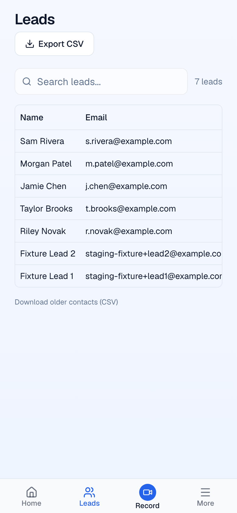
Before
Not present before
After
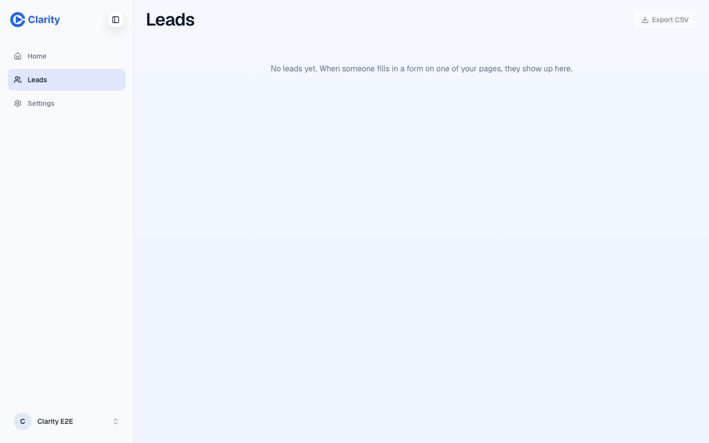
Before
Not present before
After
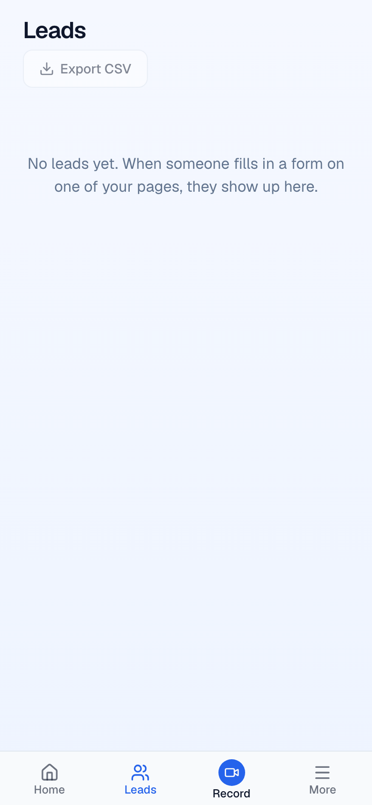
Before
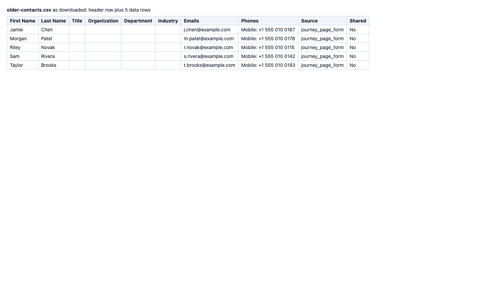
After

Before
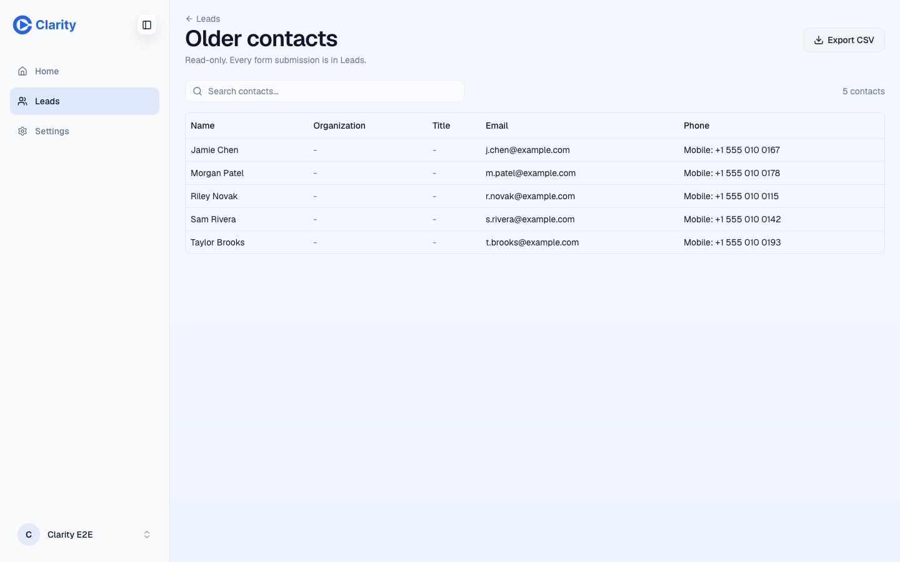
After
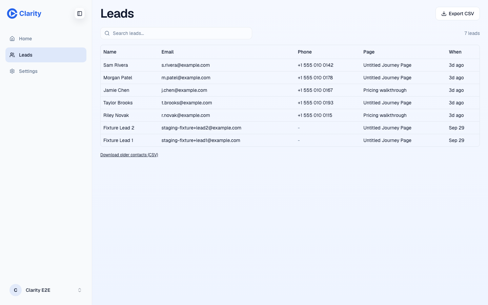
Before
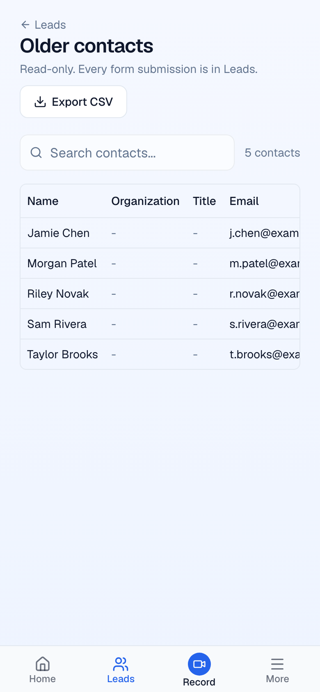
After

Before
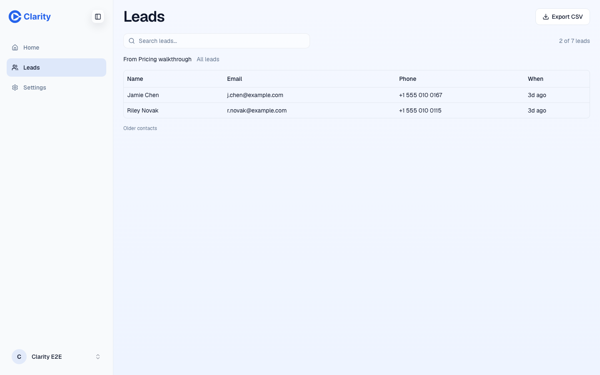
After
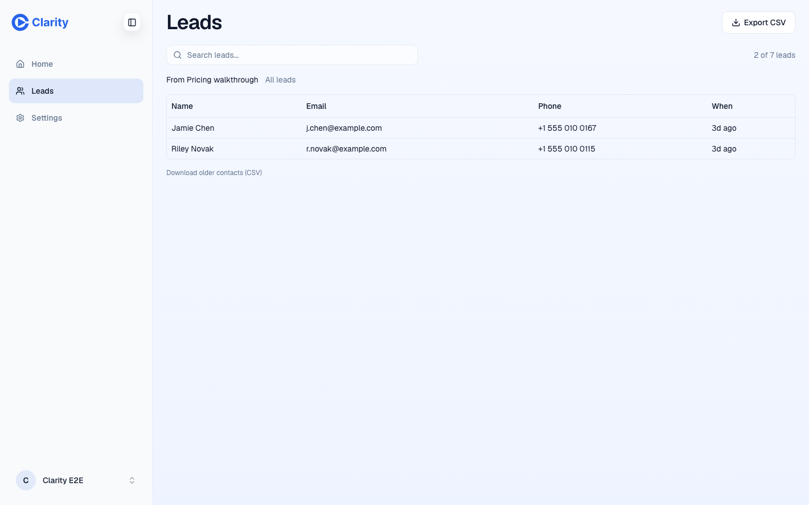
Before
After
Before

After

Before
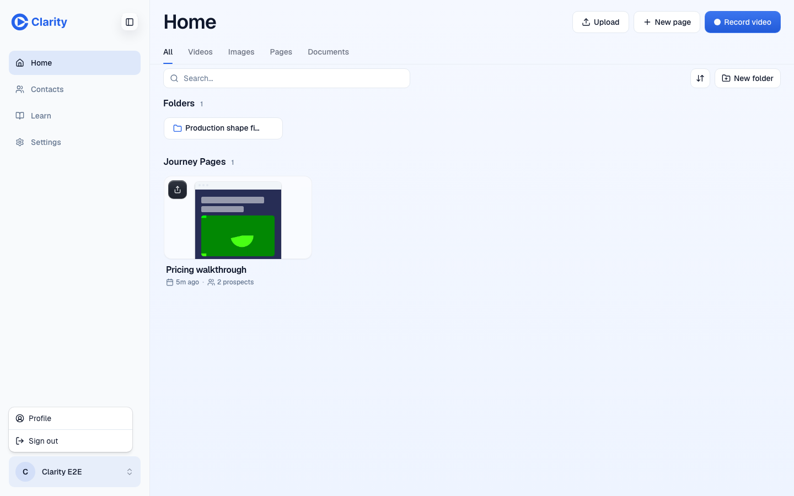
After
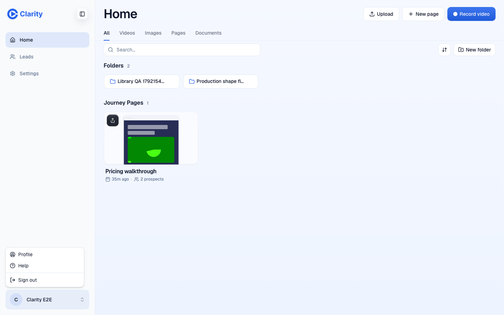
Before

After

Checks, risks and follow-ups
Checks
pnpm -s typecheck -> exit 0 (test type errors 166, at budget)npx eslint . --quiet (8 GB heap) -> no issues. node scripts/check-actions.mjs --check -> ok. node scripts/generate-guards-table.mjs -> regeneratedworkers/frontend-router vitest leads.test.ts, contacts-csv.test.ts, action-kernel.test.ts -> 13 passed. leads.test.ts covers the owner (newest first, another owner's lead hidden, no server ids, hasOlderContacts true) and an account whose only contact is deleted (no leads, hasOlderContacts false). The second goes red when the check always answers trueeditor vitest leads-route (link shown with contacts, hidden without), agent-parity, agents-page-claims, app-shell-routes, frontend-router-auth-session, agent-contacts-save, route-table, actions, frontend-router-legacy, page-stats-auth -> all passedPreview pr-1513 serving 006f726be (deploy-info): /contacts -> /leads, /contacts?journeyPageId=X -> /leads?page=X, the link downloads a contacts.csv byte-identical to round four's export, the e2e basic account (no contacts) shows no linkIndependent opus review of the previous head found no blockers. Its findings were about the team-access change, which is now removed
Risks
- Customers can no longer see, add, edit, import or delete contacts in the app. They can download them as CSV from the bottom of Leads, and only there. Deleting a person on request goes through the agent's contacts_delete with approval, or support.
- The download link shows only when the account holds a live contact, by the same scope the download reads (own contacts, plus organisation-shared ones for a customer member). The check is one EXISTS query inside leads_list.
- Considered and left out: showing team members leads on pages they can open (canAccessJourneyPage). No production page carries a corp or affiliate id, so team members would gain nothing, and the 7 system admins would see every customer's leads (480 from 41 pages on 2026-10-19). Leads stays owner-only, as in round four.
- Leads became an action (leads_list) instead of a GET /api/leads route. Main's route table holds legacy API rows at their budget of 22, and the editor's lint sends JSON reads through act(). The agent cannot call leads_list. Its pages_leads is unchanged.
- Organisation members and system admins no longer see a page's submissions they don't own. The per-page table they used before this PR is deleted.
- Decided: the contacts write API (POST, PUT, DELETE /api/contacts) stays. evals/agent-mcp/fixtures.mjs resets contacts through it.
- Decided: Settings stays in the sidebar here. D5 moves it into the account menu.
- Evidence data is fake (example.com). The e2e accounts' addresses are blurred. A round-six preview database edit that put two e2e accounts into one organisation is reverted.
- The PR keeps an empty baseline commit at the bottom from round four.
Not fixed, noticed nearby
- POST /api/contacts with a JSON body answers 500 instead of 400 (pre-existing in readContactInput).
- Both CSVs prefix phone numbers that start with + with an apostrophe (the shared spreadsheet-formula guard), as the old export did. Safe, but a CRM import keeps the apostrophe.
- The page card badge action is still labelled 'Form submissions'. It could read 'Leads'.
- docs/design-system/inventory.md is generated and still lists ContactsIndexRoute. Nothing checks it (pnpm design:inventory).
- product-analytics-events.ts still lists /contacts and /learn as page-view routes. Both only redirect now.
Before ran on fe473488d, after on 006f726be. Branch simplify/d7-leads.